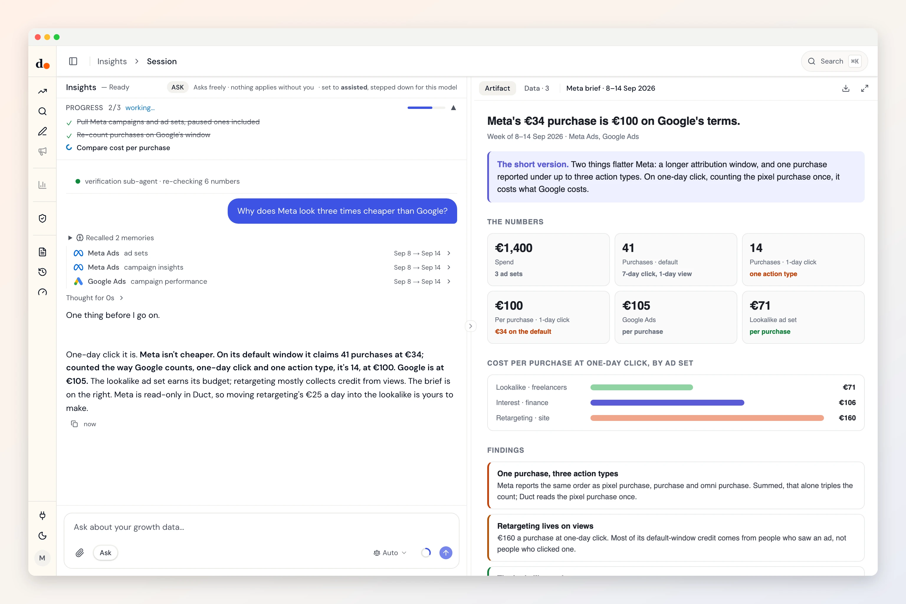

Meta Ads, counted once.
Meta credits itself with a week of clicks and a day of views, and can report one purchase three times. Duct reads Meta Ads, recounts on the window you choose, and checks the result against Stripe.
- System User token
- Reads four datasets
- Read-only
- Checked Sep 29, 2026

Ask
Questions you can just ask
Is Meta really cheaper than Google, counted the same way?

 Meta Ads + Google Ads
Meta Ads + Google AdsWhich ad sets bring customers who pay?
 Meta Ads + Stripe
Meta Ads + StripeHow much of Meta's credit comes from views, not clicks?
Meta AdsWhy did a campaign stop getting results?
Meta Ads
Access
What it reads. What it can change.
What it reads
- Campaigns, every statusnamestatusobjectivebid strategydaily budgetlifetime budgetspend cap
- Ad sets and adsnamestatusdaily budgetoptimization goalbid amountattribution setting
- PerformancespendimpressionsclicksCTRCPCCPMpurchasespurchase valueROAS
- Pixels and custom conversionsnamelast firedevent typedefault value
Meta Marketing API v26.0 · checked against the fetch code Sep 29, 2026 · read the source
What it can change
Nothing.
Duct has no Meta Ads change operation, so it cannot edit anything in Meta Ads. It can still recommend a change for you to make there.
Knowledge
What Duct already knows about Meta Ads
- 01
One purchase, three action types.
The same order can arrive as a pixel purchase, a purchase and an omni purchase. Summing them triples the count, so Duct picks one.
- 02
Attribution is a choice, not a fact.
Meta defaults to seven-day click and one-day view; Google counts the last click. Duct asks Meta for one-day click, seven-day click and one-day view separately, so the platforms can be compared on the same terms.
- 03
Paused history is hidden by default.
Without a status list Meta returns only active campaigns. Duct asks for every status, so what was switched off last month is still in the audit.
- 04
Budgets come back in cents.
Meta reports budgets in minor units and spend in whole currency. Read as euros, a €25 daily budget becomes €2,500.
Better together
What Meta Ads answers with a partner
Setup
Connect Meta Ads in three steps
- 1
In Meta Business Settings, open Users, then System users, and give one access to the ad account.
- 2
Generate a token for it with ads_read (and business_management, so Duct can list your accounts).
- 3
In Duct, open Connections, choose Meta Ads and paste the token.
Read-only: the token needs ads_read, and Duct has no Meta change operation. A System User token does not expire the way a person's login does.
Keys and tokens are stored encrypted by Duct's hosted API, never in your browser, and you can remove a connection at any time. A self-host build keeps them on your own machine.
FAQ
Meta Ads, answered
Can Duct change my Meta campaigns?
No. Duct has no Meta change operation. It reads campaigns, ad sets, ads, pixels and results, and can recommend a change for you to make in Ads Manager.
Why doesn't Meta's purchase count match Stripe?
Meta credits itself with purchases up to seven days after a click and a day after a view, and can report one order under three action types. Stripe counts money that settled. Duct counts each purchase once, on the window you pick, and reconciles against Stripe.
Why a System User token and not my own login?
A token made from a person's login expires after about 60 days, and the connection stops without warning. A System User token does not expire, so the weekly brief keeps working.
My ad account runs ads for two products. Can Duct keep them apart?
Yes. Give it the part of the campaign names that marks this product, and Duct filters to those campaigns before Meta adds anything up, so the other product never reaches the totals.
Is it free?
Yes. Duct is free with your own model keys or the ChatGPT plan you already have, and the core is MIT licensed. A paid plan later bundles the models; nothing open today moves behind it. What will cost money.